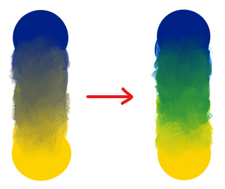

Devlog 3: Slime Time
The Player Character
We explored 21 different player character concepts drafted up by our artist, culminating in the selection of our charming slime as the central character design. We chose the slime due to the relative simplicity of rigging and overall cuteness, and we think plushies are definitely in order.
Real Color Mixing
Since our game relies on colors to convey the player’s state, and importantly the mixing of those colors in a natural environment, we felt the colors should mix in an equally natural way. This posed one of our first technical challenges.
To demonstrate why, consider the linear interpolation between yellow and blue: yellow’s RGB values are [1, 1, 0]; blue’s RGB values are [0, 0, 1]; mix them together evenly and you end up with [0.5, 0.5, 0.5], which is the RGB value for gray. Mixing pigments in the real world would make a green, not gray!
As a quick and effective solution to our problem, we found Mixbox by Scrtwpns (check out their online tech demo). Mixbox is a black box solution to inputting RGB values and getting a simulated real-world pigment in RGB out (i.e., yellow + blue → Mixbox → green). Using their Unity package, we developed the HueMix class, which is capable of representing a store of component colors and a resultant output color, allowing us to remove and add one color at a time for cool combinations on the fly!
 Image Credit: https://scrtwpns.com/mixbox/Levels & Feedback
The development of a variety of levels allowed us to showcase our progress during playtests. Player feedback highlighted the need for improved camera controls and more effective onboarding strategies.
We also gained a valuable piece of insight from this round of playtesting. We didn’t notice our camera was y-inverted until the major playtest, so everyone was commenting on something that could’ve been an easy fix, taking attention away from more important parts of the game. The insight we gathered is that we should get some light external feedback before a major playtest to catch some of the smaller issues the team may be blind to. This way playtesters during the larger playtest can focus on other parts of the game.